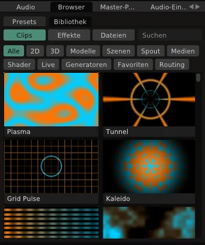

Inhalt
Erste Schritte
- Willkommen bei NyrexVJ
- Installation und erster Start
- Das Fenster im Überblick
- Deine erste Show in fünf Minuten
Visuals spielen
- Das Clip-Raster
- Decks und Übergänge
- Layer und Mischmodi
- Das Clip-Fenster
- Effekte
- Die Bibliothek
- Presets und Sitzungen
- Das Master-Fenster
Musik und Bewegung
Eigene Inhalte
- Video- und Bild-Clips
- Deine eigenen Shader
- 3D-Modelle
- Der Clip Creator
- Text, Partikel und Effektketten
- Der Node-Effekt-Editor
- Live-Quellen: Spout, NDI und Kameras
Ausgabe und Aufnahme
Live-Steuerung und Shows
- Steuerung: MIDI, OSC und die Webseite
- Show-Sync und Timecode
- Die Show-Zeitleiste
- Bühne: DMX, VRSL und VRChat
- Plugins
Nachschlagen und Hilfe
Handbuch / Visuals spielen
Die Bibliothek
#Clips, Effekte und Dateien
Der Tab Bibliothek im Browser hat drei Ansichten. Clips listet alles auf, was du in eine Zelle legen kannst, Effekte listet alles auf, was du in einen Effekt-Slot legen kannst, und Dateien zeigt die Dateien, die deine eigenen Szenen nutzen können. Das Suchfeld oben findet Einträge über ihren Namen.


#Clips filtern
In der Ansicht Clips grenzt eine Reihe von Filtern die Liste ein: Alle, 2D, 3D, Modelle, Szenen, Spout, Medien, Shader, Generatoren und Live. Clips, die in der aktuellen Version neu dazugekommen sind, tragen eine kleine Markierung, die mit der nächsten Nebenversion verschwindet.
| Filter | Was er zeigt |
|---|---|
| 2D | Jeden Clip, der kein 3D-Clip ist, also generative Clips, Bilder, Videos und Shader |
| 3D | Clips mit echtem 3D-Inhalt, etwa die eingebauten Meshes, Modelle und Szenen |
| Modelle | Deine eigenen .glb- und .gltf-Dateien |
| Szenen | Szenen, die du mit dem Clip Creator gemacht hast |
| Spout | Die vier Spout-Eingangs-Clips |
| Medien | Deine Bilder und Videos |
| Shader | Deine eigenen Shader-Dateien und ISF-Generatoren |
| Generatoren | Text-Clips und Partikel-Clips, auch die eingebauten Partikel-Clips |
| Live | NDI-Eingangs- und Kamera-Clips |
| Favoriten | Die Clips, die du mit einem Stern markiert hast, aus allen oben genannten |
#Einen Clip benutzen
Ein Klick auf einen Clip legt ihn in die gewählte Zelle und spielt ihn ab. Du kannst ihn auch auf eine beliebige Zelle ziehen oder auf einen Spaltenkopf, um ihn in den gewählten Layer dieser Spalte zu legen. Ein Rechtsklick bietet In die gewählte Zelle legen, In die nächste freie Zelle eines Layers legen und bei Szenen Im Clip Creator bearbeiten.
#Favoriten und Tags
Klick mit rechts auf einen Clip und wähl Zu Favoriten hinzufügen. Favoriten zeigen eine kleine Raute in der Liste und stehen alle im Filter Favoriten. Tags bearbeiten öffnet ein kleines Fenster, in dem du ein Wort tippst und mit Enter als Tag hinzufügst, zum Beispiel intro oder rot. Ein Clip kann 8 Tags mit bis zu 24 Zeichen haben, und das Fenster listet die Tags auf, die deine Bibliothek schon benutzt, damit du einen anklicken kannst, statt ihn noch einmal zu tippen.
Das Suchfeld versteht Tags: Ein Wort findet Clips nach Name und nach Tag, tag:rot findet nur Clips mit diesem Tag, und is:fav findet nur Favoriten. Du kannst sie verbinden, zum Beispiel is:fav tag:intro.
Favoriten und Tags stehen in library_meta.json im Datenordner, neben deinen eigenen Dateien, und nicht in Presets. Sie gehören zum Namen des Clips. Benennst du eine Datei um, beginnt der neue Name ohne Stern und ohne Tags. Eine Datei, die sich nicht lesen lässt, bleibt als library_meta.json.damaged erhalten, und du beginnst mit einer leeren Liste.
#Einen Clip überall ersetzen
Tauschst du ein Video gegen eine bessere Fassung, musst du nicht jede Zelle anfassen. Klick mit rechts auf den Clip in der Bibliothek, wähl Diesen Clip überall ersetzen und such den neuen Clip aus. Jede Zelle in jedem Deck, die den alten Clip spielt, spielt dann den neuen. Layer-, Effekt- und Mischeinstellungen bleiben.
Hak Wiedergabe-Einstellungen der Zellen behalten an, wenn Tempo, Schleife und Start jeder Zelle so bleiben sollen, wie sie sind. Die Meldung danach sagt, wie viele Zellen geändert wurden. Rückgängig (Strg+Z) nimmt den ganzen Austausch in einem Schritt zurück.
#Dateien und Ordner
Unten in der Bibliothek steht, wohin deine eigenen Dateien gehören, mit einer Schaltfläche für jeden Ordner: Modelle, Medien und Shader. Leg die Dateien dort ab und drück Neu einlesen, oder zieh sie einfach auf das NyrexVJ-Fenster. Beispiel-Shader erstellen schreibt einen kleinen Shader, den du in jedem Texteditor öffnen kannst. Die Ansicht Dateien listet die Modelle und Texturen auf, die deine Szenen nutzen können, und die Szenen, die du gespeichert hast. Dateien und der Datenordner zeigt, wo diese Ordner auf deinem Computer liegen.
Fehler gefunden oder etwas vergessen? Sag es uns auf GitHub. Dasselbe Handbuch steckt im Programm, du hast es also auch ohne Internet. Öffne es mit F1 oder über das Menü Hilfe, Handbuch.